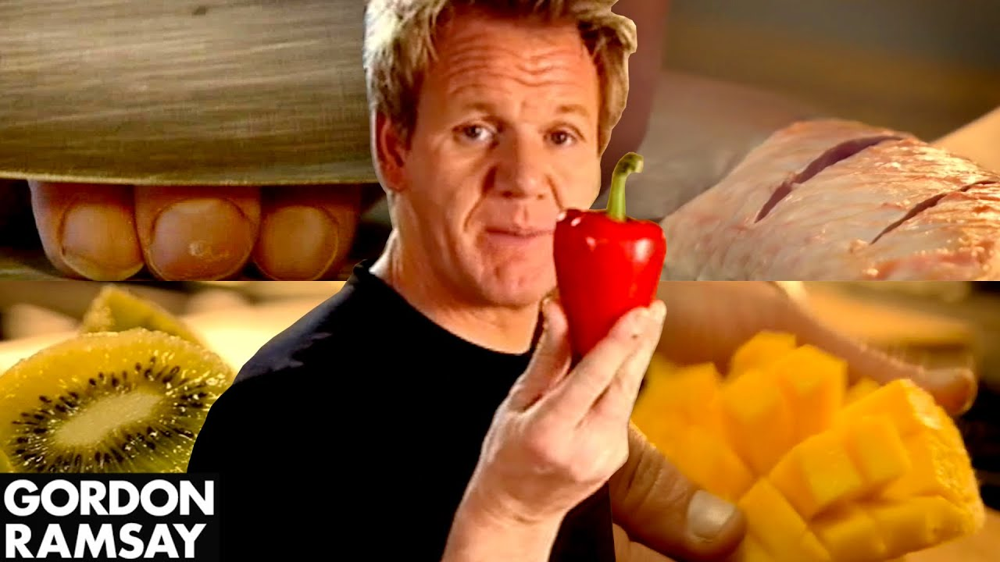
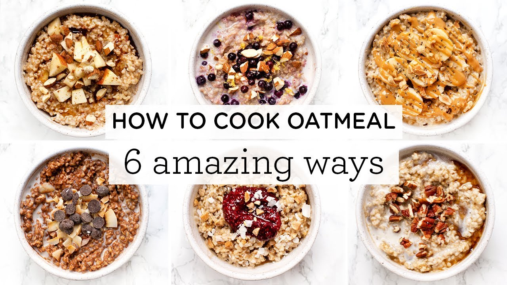
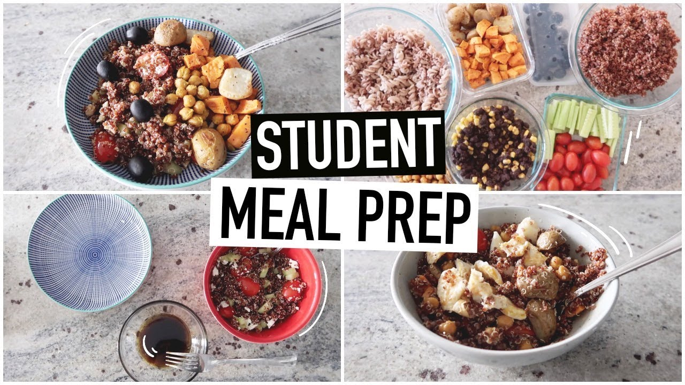

10 Incredibly Useful Cooking Tips - Gordon Ramsay
Gordon Ramsay
Duration: 5:06 min

HOW TO COOK OATMEAL ‣‣ 6 Amazing Steel Cut Oatmeal Recipes
Simply Quinoa
Duration: 9:53 min
How To Make Homemade Japanese Food
Tasty
Duration: 6:39 min

STUDENT MEAL PREP WITH ME | easy meals for university
Caitlin's Corner
Duration: 14:10 min
7 Healthy Meals Under 30 Mins 🥗Budget Meal Prep Challenge!
Chloe Ting
Duration: 14:02 min